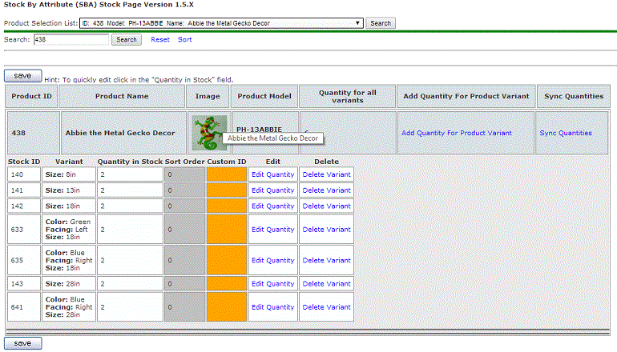
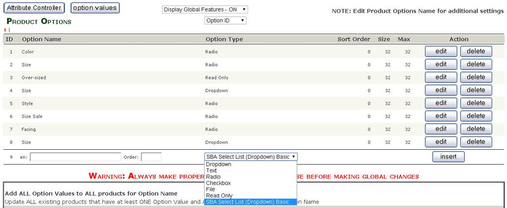

Installation | Configuration | Attribute Stock Setup | Optional Update | Optional Export / Import | Notes | HOME
This version of the SBA plug-in supports "Multiple-Attribute-Combinations"
i.e., allows multiple attributes of a product in the SAME Stock ROW on the SBA stock page, thus you can create custom combinations with specific quantities.

This update should function as follows:
Product with no associated attributes, uses the quantity assigned to the product in the catalog.
Product with Attribute(s), If no attribute is created in the SBA Stock page, will use the quantity from the product catalog.
Product with Attribute(s), and attributes are created in the SBA stock page, uses the quantity from the SBA Stock page.
General:
If the quantity is zero, than the flag is set to indicate out of stock.
If the quantity is less than the order requested in the cart, than the flag will indicate low stock.
Flag display is based on the settings in the "Configuration -> Stock" (Check Stock Level = XXXX)
If an order is deleted and restocked the mod does not add the quantity back to the actual attribute, it adds the quantity back to Quantity for all variants.
When the quantity for an "attribute combination" is zero (0) the Quantity for all variants is used in the calculations.
"Attribute combinations" that are out of stock can still be ordered even when "Allow Checkout" is set to false as long the Quantity for all variants indicates enough stock.
The Product Stock Quantity must be greater than 0 or the product will show as out of stock.
This is not controlled by SBA, it is part of the Zen Cart default functionality
New
New selection added to the "Option Name Manager", this supports a yes/no type of selection list that
is not tied to an SBA stock level (“Product Option Type” SBA
Select List (Dropdown) Basic
added to support this option).

Sample Language files are included for both French
and Dutch.
There are files for both the "Front end"
(Store) and the Admin, they are located in "includes\languages",
the text in these files will need to be updated for the applicable
language. These files are provided to show that the mod can be
customized to local languages.
Text displayed on the product info page and the shopping cart can be changed in the file: includes\languages\english\extra_definitions\products_with_attributes.php
Text
displayed on the Invoice, Orders, and Packing Slip can be changed
in the
file:
admin\includes\languages\english\products_with_attributes_stock.php
Helpful Attribute Resource: http://www.we-r-here.com/zen-cart-tutorials
Helpful Additional Images Resource: http://www.zen-cart.com/content.php?100-how-do-i-add-multiple-images-to-a-product
Suggested reading if using PHP 5.4: PHP 5.4 PHP Warning: Creating default object from empty value
A file (Instructions\InstallSQLcommands.txt) is
provided that contains the "raw" sql commands for
reference only.
Refer to the change
log for details of the update.
Zen Cart Open Source E-commerce - Stock by Attributes
This contribution is subject to version 2.0 of the GPL license, that is bundled with this package in the file LICENSE, and is available through the world-wide-web at the following url: http://www.zen-cart.com/license/2_0.txt. If you did not receive a copy of the Zen Cart license and are unable to obtain it through the world-wide-web, please send a note to license@zen-cart.com.